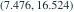
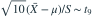
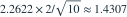

独立正态样本n=10，样本均值12，样本标准差S=2， 以n−1为分母。总体方差未知。已知
以n−1为分母。总体方差未知。已知  ，总体均值95%双侧置信区间约为？
，总体均值95%双侧置信区间约为？
以n−1为分母。总体方差未知。已知 ，总体均值95%双侧置信区间约为？- A

- B
- C
- D
我已思考，展开答案与解析
正确答案：C
- 枢轴

。 - 半宽

。 - 区间为 。计算器先算标准误，再乘分位数。
易错提醒σ未知时不能直接用1.96；S与标准误S/√n不同。
考后回忆 · 条件重建 · 回忆7、9
依据考试回忆重建；数字、选项和必要条件为补充设定，非原题。